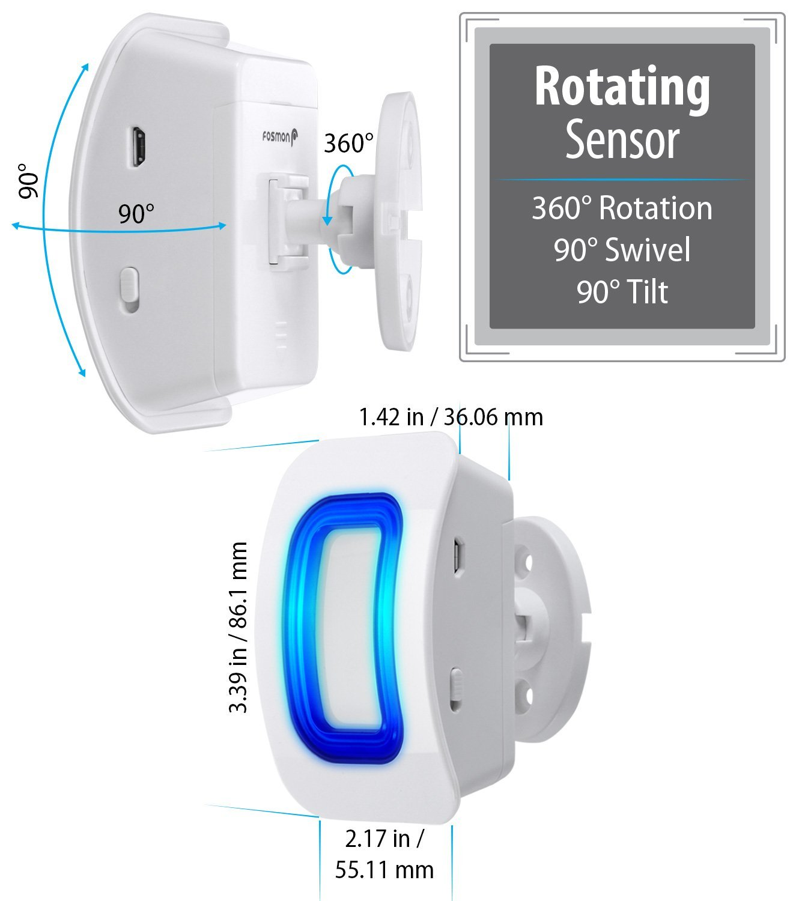
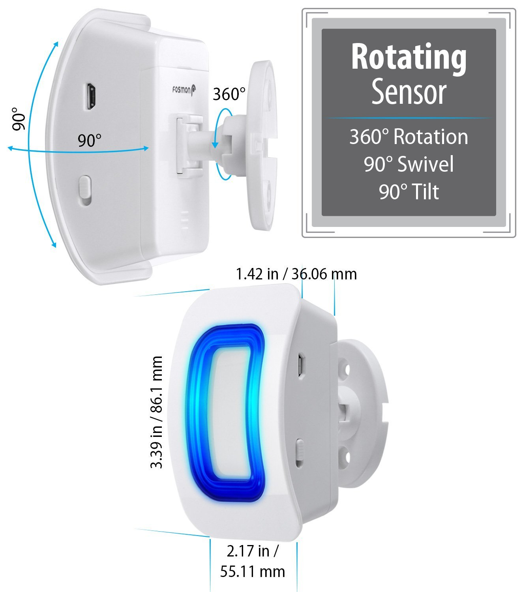

Fosmon WaveLink 51005HOM Wireless Home Security Driveway Alarm, Motion Sensor Detect Alert, Store Door Entry Chime

 

Product Information
- [DOOR ENTRY ALERT] Alerting business owner or home owner with wireless doorbell. The ability to sense motion through the front or back door. Portable design to easily install in homes, office, work, retail store, or utilize it for mailbox, garage, driveway or other.
- [MOTION SENSOR DISTANCE] Fosmon Wireless Doorbell Sensor, detect movements between 16.5ft/5m to 110 degree. Transporting signal to receiver within 500ft/150m in operating range, an activation for the receiver to alert.
- [RINGTONE] Provide 52 different options of ringtone; from melody sounds to simple basic buzz. Customizing doorbell ring to personal preference whenever you want. Along with 4 volume level control. Never having to miss a visitor or customers walk-in.
- [VISUAL ALERTS] When the receiver transmitter signal engage, the LED light indicator flashes to perform a visual alter. Great visual indicator for you when listening to music or for the hearing impaired.
- [WIRE FREE] No wires in-wall installation. Fosmon Wireless Doorbell Sensor is battery operated for fast and easy use. Each receiver can be paired with up to 10 transmitters. Each transmitter can be paired with up to 10 receivers.